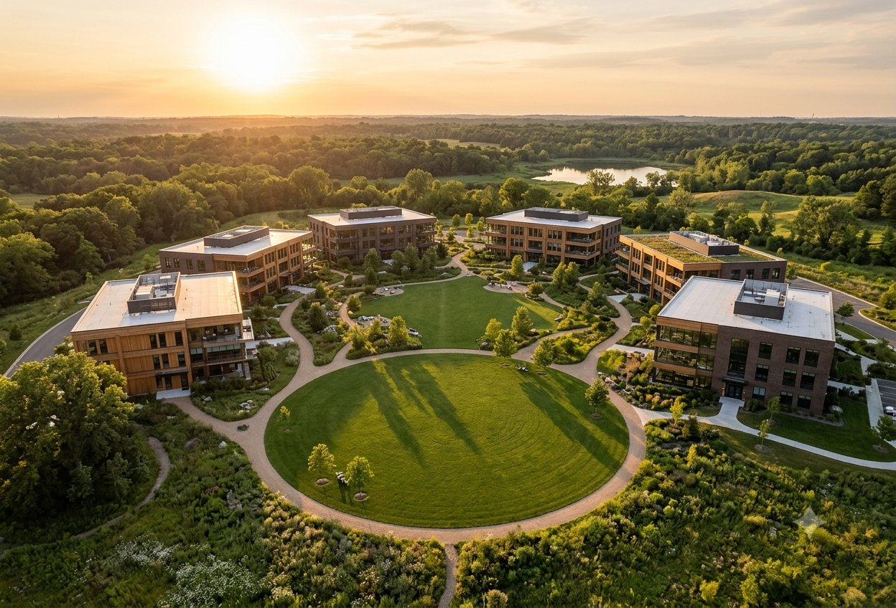

A low, wind-shrugging family home for open country. Deep overhangs shade the summer sun, a sheltered court breaks the wind, and every connection is sized for the gusts — not the average day.
A representative selection of design and engineering concepts, shown as concept visualizations. Full project documentation, photography, and references are shared during consultation.
A low, wind-shrugging family home for open country. Deep overhangs shade the summer sun, a sheltered court breaks the wind, and every connection is sized for the gusts — not the average day.

A mid-rise workplace where the facade rhythm is the structure — bays, glazing, and frame designed together instead of decorated afterward, with daylight reaching every desk.

A long-span arch pavilion for public gatherings — a single structural gesture doing all the work, engineered for wind uplift and snow load alike, with nothing hidden behind cladding.

A historic waterfront mill re-imagined as studios and light industry — structural assessment first, then an envelope strategy that keeps the brick honest and the tenants warm.

A phased campus plan organized around a shared green commons rather than parking — buildings, structure, and infrastructure planned together so each phase stands on its own.
“Every project begins the same way: a conversation, a site visit, and a promise kept.”George B Magnus
References, full portfolios, and detailed case studies are available on request during consultation.
Start a Project →